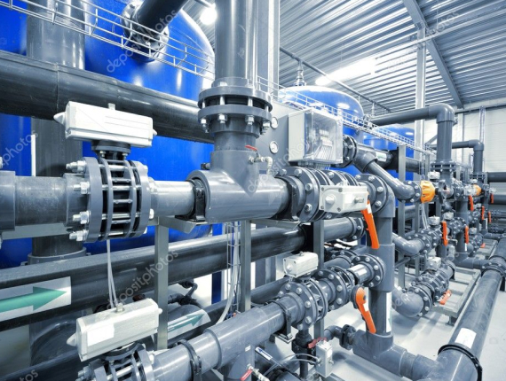

Сервис
Большое количество рудников на пространстве постсоветского региона до недавнего времени работало на оборудовании, которое было спроектировано и произведено в советское время, которое в общей своей массе устарело или перестало удовлетворять растущие потребности недропользователей.
В данной области промышленного оборудования мы являемся единственными поставщиками и разработчиками уникального сорбционно-десорбционного оборудования. Совместно с нашими партнерами были спроектированы, произведены и поставлены совершенно новые аппараты из термопласта для выщелачивания урана
-

Мы дополняем наш всесторонний сервис тщательно подобранным экспедиторским подразделением, которое полностью вовлечено в производственные процессы и обладает собственным автопарком. Учитывая специфику нашей продукции, водители прошли специальную подготовку, что позволяет обеспечить высочайший уровень безопасности при перевозке и проведении погрузочно-разгрузочных работ. В сферу деятельности нашего подразделения по логистике входит также планирование перевозок, их согласование и сопровождение, ежедневное общение с соответствующими службами и органами власти, например, полицией и дорожными службами.